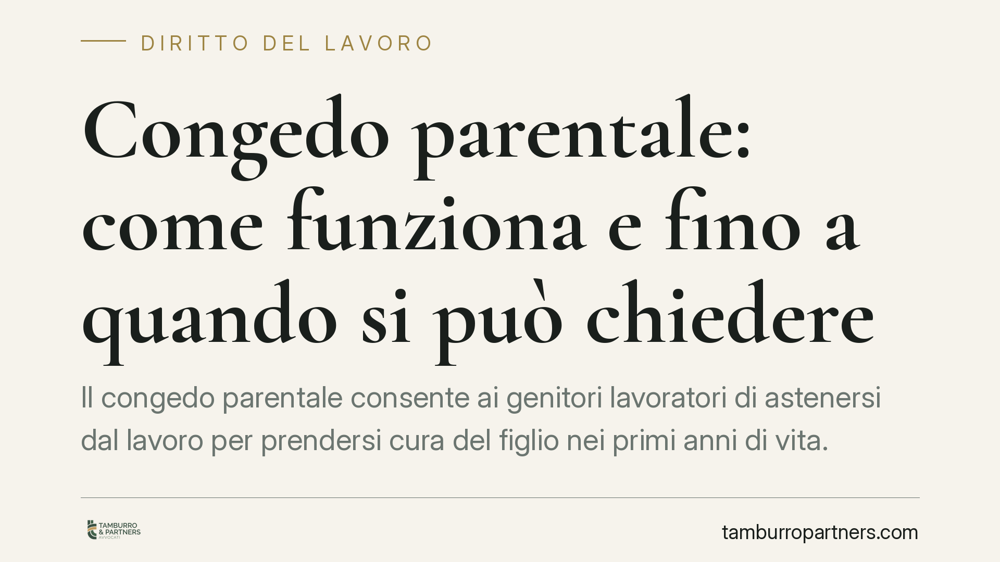

Congedo parentale: come funziona e fino a quando si può chiedere
Il congedo parentale consente ai genitori lavoratori di astenersi dal lavoro per prendersi cura del figlio nei primi anni di vita. Le regole su durata, età massima del bambino e modalità di indennizzo sono definite dal D.Lgs. 151/2001 e periodicamente ritoccate dalle leggi di Bilancio. Chiariamo cosa prevede oggi la disciplina e come muoversi in modo corretto.

Il fatto
Il congedo parentale è uno degli strumenti più utilizzati dai genitori che lavorano, ma anche uno di quelli su cui circolano più informazioni imprecise. La disciplina cambia con una certa frequenza: durata, misura dell'indennità e finestra temporale entro cui è possibile fruirne sono stati oggetto di ripetuti interventi negli ultimi anni.
Prima di pianificare un'astensione, è quindi essenziale distinguere ciò che è stabile nell'impianto normativo da ciò che dipende dalle modifiche più recenti. Su questo punto va usata cautela: alcune novità annunciate come imminenti richiedono, per essere applicate, la pubblicazione della norma in Gazzetta Ufficiale e le istruzioni operative dell'INPS. Finché questi passaggi non sono completati, il riferimento resta la disciplina vigente.
Inquadramento normativo
La fonte principale è il D.Lgs. 26 marzo 2001, n. 151 (Testo unico maternità e paternità). L'art. 32 disciplina il congedo parentale vero e proprio, cioè l'astensione facoltativa che spetta a ciascun genitore dopo la conclusione del congedo obbligatorio.
Occorre non confondere gli istituti:
- il congedo di maternità (artt. 16 e seguenti) è l'astensione obbligatoria della madre intorno al parto, di norma cinque mesi;
- il congedo di paternità (obbligatorio e alternativo, artt. 27-bis e 28) riguarda il padre nel periodo a ridosso della nascita;
- il congedo parentale (art. 32) è invece facoltativo, spetta a entrambi i genitori e si colloca negli anni successivi.
Quanto alla durata, l'art. 32 fissa un monte complessivo massimo ripartito tra i genitori (di regola sei mesi per ciascuno, entro un limite complessivo di dieci mesi, elevabile a undici se il padre fruisce di almeno tre mesi). Questo tetto è distinto dal limite di età del figlio entro cui il congedo può essere richiesto: sono due parametri diversi che vanno tenuti separati.
L'indennità è regolata dall'art. 34: alcuni periodi sono indennizzati in misura piena o rafforzata, altri in misura ridotta o non indennizzati, secondo le percentuali di volta in volta stabilite dalla legge. Poiché tali percentuali sono state modificate da più leggi di Bilancio, è opportuno verificare la misura applicabile all'anno di fruizione consultando le circolari INPS aggiornate, evitando di basarsi su valori generici.
> Nota su eventuali novità in discussione. Le proposte di estensione dell'età massima del figlio o di innalzamento delle percentuali di indennizzo vanno considerate solo dopo la pubblicazione del testo normativo definitivo e del relativo messaggio o circolare INPS. In assenza di questi atti, la regola applicabile resta quella vigente.
Implicazioni pratiche
Per il genitore lavoratore la distinzione tra monte mesi e finestra temporale è decisiva. Il monte mesi stabilisce quanti mesi complessivi si possono utilizzare; la finestra temporale indica fino a quale età del figlio quei mesi possono essere consumati. Un'eventuale estensione della finestra non aumenta i mesi disponibili: consente solo di distribuirli su un arco temporale più ampio.
Rileva anche la modalità di fruizione. Il congedo può essere goduto in forma continuativa, frazionata a giornate oppure su base oraria, se il contratto collettivo lo prevede. Cambia anche il preavviso dovuto al datore di lavoro: l'art. 32, comma 3, prevede un preavviso non inferiore a cinque giorni per la fruizione a giornate e non inferiore a due giorni per la fruizione su base oraria, salvo casi di oggettiva impossibilità.
Per i lavoratori autonomi e per alcune categorie di iscritti alla Gestione separata valgono regole specifiche e differenziate: le condizioni e i limiti non coincidono con quelli dei dipendenti.
Cosa fare in concreto
- Verificare l'età del figlio rispetto al limite temporale in vigore nell'anno di fruizione, tenendolo distinto dal monte mesi ancora disponibile.
- Controllare i mesi già utilizzati dall'altro genitore, perché il tetto complessivo è condiviso.
- Presentare la domanda all'INPS in via telematica prima dell'inizio del periodo, dando al datore di lavoro il preavviso di cinque giorni (due giorni se su base oraria).
- Consultare le percentuali di indennizzo aggiornate all'anno di fruizione tramite le circolari INPS, senza affidarsi a valori generici.
- Verificare il contratto collettivo applicato per capire se e come è ammessa la fruizione a ore.
È opportuno verificare la propria posizione contributiva e i periodi già goduti prima di pianificare l'astensione, così da evitare rigetti o sospensioni dell'indennità.
---
*Aggiornamento normativo: gennaio 2026. Le percentuali di indennizzo e gli eventuali limiti di età sono soggetti a modifiche introdotte dalle leggi di Bilancio: verificare sempre la versione vigente.*
Contributo informativo a cura di Tamburro & Partners - Avv. Giuseppe Tamburro. Non costituisce parere legale.
Ogni storia di lavoro ha i suoi tempi.
Se gestisci HR e vuoi un confronto su contenzioso, ispezioni o licenziamenti, scrivi allo studio. Ti rispondiamo entro un giorno lavorativo.